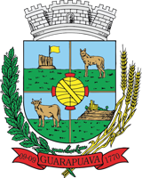
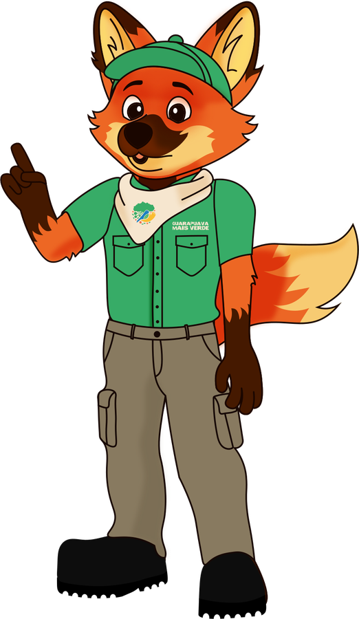
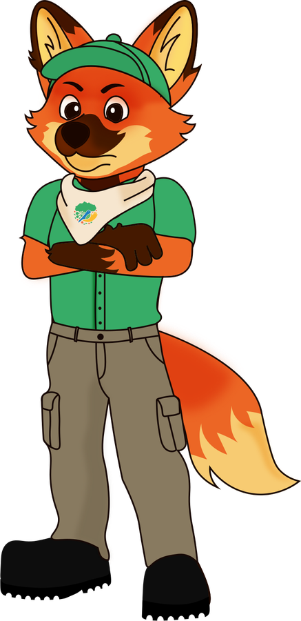
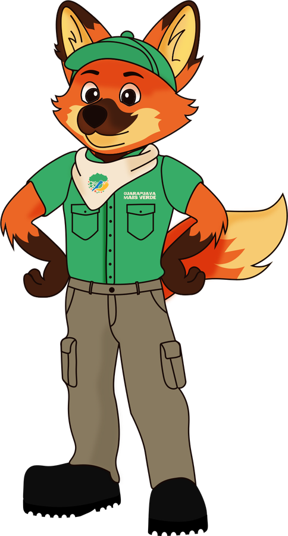

dos resíduos de uma casa são orgânicos
Separado, todo esse volume pode virar adubo pela compostagem em vez de ocupar espaço no aterro.
Fonte: Cartilha da Compostagem · Composta Paraná
Semana Lixo Zero Paraná 2026Manual de separação de resíduos das secretarias municipais de Guarapuava. Em cada setor, duas lixeiras: reciclável de um lado, orgânico do outro.
No mesmo saco, reciclável e orgânico estragam um ao outro. O papel absorve gordura, a embalagem fica com resto de comida, e o que poderia voltar como matéria-prima ou virar adubo segue para o aterro sanitário.
Separado, todo esse volume pode virar adubo pela compostagem em vez de ocupar espaço no aterro.
Fonte: Cartilha da Compostagem · Composta ParanáO que não é reciclado nem compostado vai para o aterro sanitário, com custo alto para o município e sem nenhum reaproveitamento.
Seco e limpo, ele segue para associações e cooperativas de catadores e volta para a indústria. Sujo de comida, perde o valor.
Cada secretaria passa a ter a lixeira de reciclável e a de orgânico, identificadas com as placas do Guarapuava Mais Verde. Na dúvida, olhe a placa antes de descartar.

Seco e limpo
Como descartarEsvazie, enxágue se precisar e deixe secar. Dobre as caixas e amasse garrafas e latas para ocupar menos espaço.
Compostável
Como descartarEscorra os líquidos antes. Na copa, deixe a lixeira de orgânico perto da pia: é ali que aparece a maior parte dele.
Algumas coisas não vão em nenhuma das duas lixeiras. Separar esses itens à parte é o que mantém as outras duas limpas, e a cidade tem pontos de coleta para cada um.
Destino: lixeira comum, como a dos banheiros. Segue para o aterro sanitário, por isso quanto menos rejeito, melhor.
Destino: nunca nas lixeiras. Guarde à parte e leve a um dos pontos de coleta da lista abaixo.
Pontos de coleta da lista oficial de logística reversa da Prefeitura. Toque no tipo de resíduo para ver os endereços.
O Ecoponto recebe só móveis inservíveis e resíduos de construção civil.
Doze itens que aparecem todo dia numa secretaria. Escolha o destino e veja a resposta.

Os itens com pegadinha são os que mais aparecem misturados: guardanapo, copinho de café e marmita.

E continua com a equipe de limpeza, que recolhe as lixeiras e leva cada saco ao destino certo. Ela não tem como desfazer uma mistura: separar resto de comida de papel exigiria abrir o saco e mexer no lixo, com risco e sem resultado. O trabalho dela depende do cuidado de quem descarta.
Reciclável e orgânico em lixeiras diferentes, sempre.
Esvazie copos e garrafas na pia. Líquido vaza do saco e molha o papel.
Embrulhe vidro quebrado e objetos cortantes em papel e avise. Evita acidentes no recolhimento.
Defina onde ficam as lixeiras do setor e para onde vai cada saco no seu prédio.
O resíduo mais fácil de separar é o que nem chegou a existir. Os cinco Rs da sustentabilidade, na rotina da secretaria:
Precisa mesmo imprimir? O documento digital circula mais rápido e não vira resíduo.
Dispense copos, sacolas e talheres descartáveis. Tenha sua caneca e sua garrafa.
Imprima frente e verso e só o necessário. Peça apenas o material que vai usar.
Rascunho vira bloco de anotações. Pastas, envelopes e caixas podem circular de novo.
O que sobrar vai para a lixeira certa, limpo e seco.
A compostagem é a reciclagem dos resíduos orgânicos. Bactérias, fungos e minhocas decompõem as sobras e geram um composto com aspecto de terra e cheiro de floresta.
Resíduo orgânico, rico em nitrogênio, misturado com matéria seca, como folhas e serragem, rica em carbono.
Compostar evita o chorume nos aterros e a liberação de metano, um dos gases que mais agravam o efeito estufa.
O adubo melhora a fertilidade do solo e pode ir para hortas e para a agricultura agroecológica.
A Cartilha da Compostagem do programa Composta Paraná ensina a montar uma composteira de balde, um minhocário e a usar o Método Lages de Compostagem.
Confira a separação no seu setor, item por item. A marcação fica salva só neste aparelho.
Sete passos para deixar as lixeiras e a rotina prontas para a separação.
Os materiais da Semana Lixo Zero ficam reunidos aqui, prontos para enviar aos colegas.